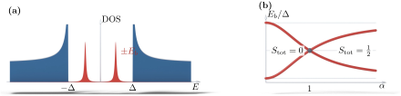

Advanced Quantum Materials 2027 · All lectures · Lecture notes
Session 9. Excitations and Defects in Quantum Materials
9.7 Impurities as diagnostics II, magnetic impurities in a superconductor
Superconductors behave in a completely different way under a local perturbation, because for single-particle excitations a superconductor is an insulator in the bulk. There is a finite gap \(\Delta\), so there is no Fermi surface that can give oscillations of the Friedel type. The interesting physics is instead the difference between magnetic and non-magnetic impurities.
Let us remember that an s-wave Cooper pair binds one spin-up electron and one spin-down electron. A non-magnetic impurity, which is an ordinary local potential, does not distinguish spin up from spin down. So it does not break time-reversal symmetry, and it cannot lower the energy needed to break any specific Cooper pair. In practice, the density of states of a conventional s-wave superconductor is almost the same with and without a non-magnetic impurity, including the gap, and the slides show the two spectra on top of each other.
A magnetic impurity is completely different. It couples with strength \(J\) to the local spin, it distinguishes up from down, and so it does break time-reversal symmetry. This lowers the energy needed to break one specific Cooper pair and gives a real bound state inside the gap. In the approximation of a classical spin, in the Born approximation, this is the Yu-Shiba-Rusinov problem, which is not named in the transcript, but the setup is the same. With \(\alpha \equiv \pi \nu_0 J S\), where \(\nu_0\) is the density of states of the normal state at the Fermi level and \(S\) is the impurity spin, the energy of the bound state in the gap is
\[E_b(J) = \Delta\, \frac{1-\alpha^2}{1+\alpha^2}. \tag{9.10}\]
Equation (9.10) gives the qualitative curve that the slides show as a function of \(J\). At \(J=0\) (\(\alpha=0\)), \(E_b = \Delta\), which is at the gap edge, meaning that there is no real bound state yet. As \(J\) increases, \(\alpha\) grows and \(E_b\) moves down through the gap. At \(\alpha = 1\), which is \(\pi\nu_0 J S = 1\), the state crosses zero energy exactly, and for \(\alpha>1\) the numerator of (9.10) becomes negative, so the bound state appears again on the other side of zero. This crossing is a real quantum phase transition, where the fermion parity of the electronic ground state changes. Below it the electronic ground state is even, with total electron spin \(S_{\rm tot}=0\), where every Cooper pair is intact and the impurity spin is not screened. Above it the electronic ground state has \(S_{\rm tot}=1/2\), since one quasiparticle is bound to the impurity and partially screens its spin. So a superconductor with a single magnetic impurity that we can tune is a minimal, exactly solvable model of a quantum phase transition, which is driven only by a local perturbation. Both parts of this picture are drawn in figure 9.3. It shows the in-gap states that a magnetic impurity adds to a BCS spectrum that is otherwise unchanged, and the path that (9.10) follows across the gap as \(\alpha\) grows.

For \(\alpha=0.5\) in (9.10), what is the energy of the bound state in units of \(\Delta\)?
Show the answers
- A. ✗ False
This is false. At \(\alpha=0.5\) the expression \(1-\alpha^2\) gives \(0.75\), but the full formula gives \(0.6\). The wrong form also fails at \(\alpha=2\), where it gives \(-3\Delta\), which is outside the gap.
- B. ✓ True
This is true. With \(\alpha^2=0.25\) the energy is \(0.75/1.25=0.6\). The formula stays between \(-\Delta\) and \(\Delta\) for every \(\alpha\), for example it gives \(-0.6\Delta\) at \(\alpha=2\).
- C. ✗ False
This is false. The bound state reaches zero only when \(1-\alpha^2=0\), so at \(\alpha=1\). At \(\alpha=0.5\) the numerator is \(0.75\), and the energy is \(0.6\Delta\).
The exchange is increased until \(\alpha\) is slightly larger than one. What changes in the electronic ground state?
Show the answers
- A. ✗ False
This is false. For \(\alpha=1.2\) the energy is \(-0.44/2.44\,\Delta\approx-0.18\Delta\), which is negative. The state is now cheaper to fill, so the ground state is not the same.
- B. ✗ False
This is false. The bulk gap stays \(\Delta\) for every \(\alpha\). At \(\alpha=1.2\) the bound state sits at \(-0.18\Delta\), inside the gap, and the continuum at \(\pm\Delta\) has not moved.
- C. ✓ True
This is true. At \(\alpha=1\) the energy crosses zero, and for \(\alpha=1.2\) it is \(-0.18\Delta\), so occupying it lowers the energy. One quasiparticle is bound, which changes the parity and gives spin \(1/2\).
Try it. Run the cell and follow the bright line inside the gap as \(J\) grows. Find the value of \(J\) where it crosses zero energy. Then change h.add_onsite(1.8) to another value and run it again. The crossing moves, since \(\alpha=\pi\nu_0JS\) depends on the density of states at the Fermi level.
Notebook check-in: session9.ipynb, “Magnetic impurities in a conventional superconductor” (Core) and “Single magnetic impurity in a superconductor” (Challenge)
Build a 1D superconducting chain with a magnetic impurity with an exchange \(J\) that you can change, and follow the energy of the in-gap state as in (9.10). Check the change of sign at the crossing. Check also that a non-magnetic impurity, where you set \(J=0\) and change only the local potential, leaves the gap edges almost unchanged, as the qualitative argument above predicts.